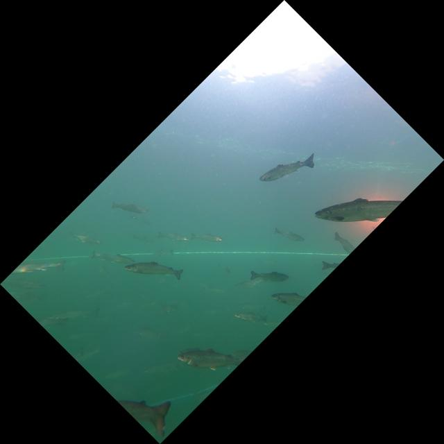
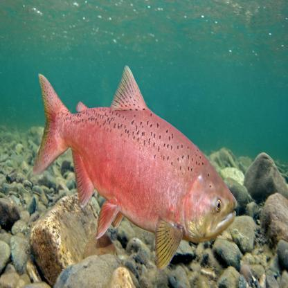
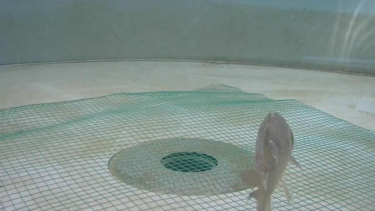
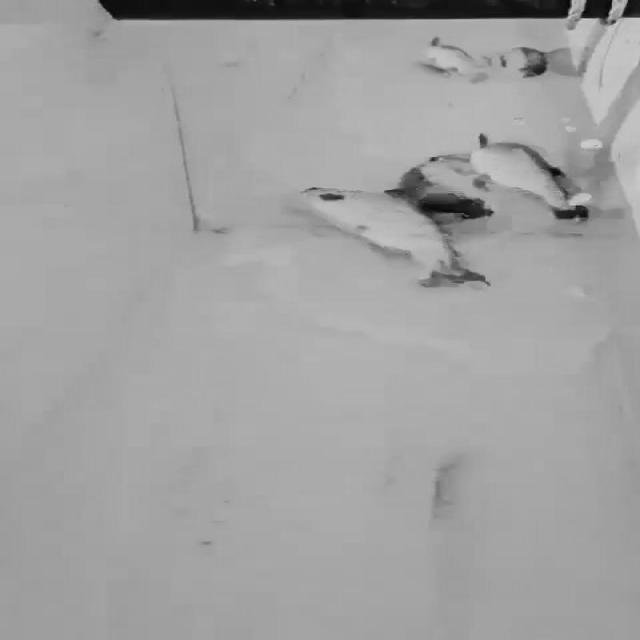
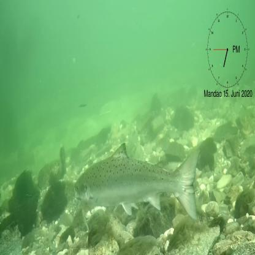
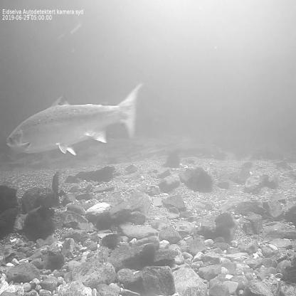
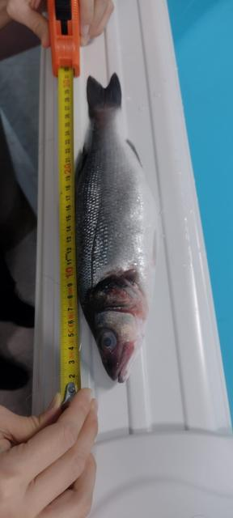
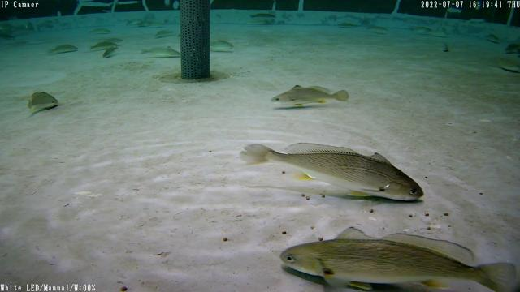
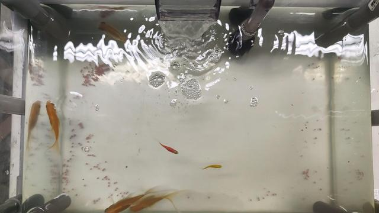
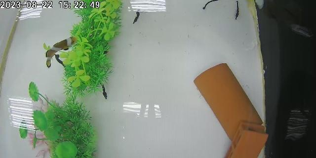

SalmoSonar Visión
datasets · videos · predicciones · atención
Visión para el estanque piloto
Imágenes reales de los datasets públicos con sus etiquetas, predicciones de los modelos, mapas de atención y los cuadros que envía la recreación 3D del estanque. Las dos tareas: peso de los peces por estéreo y alimento en el fondo.
Servicio de visión
en línea
NVIDIA GB10 · modelos: fish listo, pellet listo
Recreación 3D
0 cuadros
todavía no envía cuadros a POST /api/v1/sim_frames
Peso medio vigente
sin mediciones
el pipeline de cámaras publica en POST /api/v1/measurements
Datasets
Ver todos Stereo Fish BézierFusion
Bajo el agua, estanque de cultivo; dataset1 con una cámara (2048×1536), dataset2 con par estéreo lado a lado (3840×1080)
Stereo Fish BézierFusion
Bajo el agua, estanque de cultivo; dataset1 con una cámara (2048×1536), dataset2 con par estéreo lado a lado (3840×1080)

BoostCompTrack, salmón en jaulas Salmón del Atlántico bajo el agua en jaulas de mar (Noruega); cámaras cAIge y GoPro cAIge salmón, re-identificación (recortes por individuo)
Recortes de salmón bajo el agua en jaulas, agrupados por individuo y cámara, para reconocer al mismo pez en cámaras distintas
cAIge salmón, re-identificación (recortes por individuo)
Recortes de salmón bajo el agua en jaulas, agrupados por individuo y cámara, para reconocer al mismo pez en cámaras distintas
 cAIge salmón (segmentación y re-identificación)
Recortes de salmón bajo el agua en jaulas; polígonos de las regiones Q1 y Q2 del cuerpo y del opérculo (nombres del data.yaml del autor)
cAIge salmón (segmentación y re-identificación)
Recortes de salmón bajo el agua en jaulas; polígonos de las regiones Q1 y Q2 del cuerpo y del opérculo (nombres del data.yaml del autor)

Salmon Detection, Chinook (Roboflow) Salmón Chinook, cajas de pez completo (40 imágenes)
FOD, oclusión de peces Peces en estanque con oclusión; 14.376 imágenes; incluye largo y peso de 66 carpas
Salmon (Roboflow, devsoft) Salmón, cajas de pez completo (54 imágenes)
SalmonMandag (Roboflow, río Eidselva) Salmón bajo el agua en contador de río (Noruega), segunda serie del mismo autor Salmon body OBB
Salmón del Atlántico adulto fuera del agua, sobre tabla de fenotipado
Salmon body OBB
Salmón del Atlántico adulto fuera del agua, sobre tabla de fenotipado

Salmon (Roboflow, río Eidselva) Salmón del Atlántico filmado en el río Eidselva (Noruega); cajas de pez completo Salmon_VF (Roboflow)
Salmón, cajas de pez completo (109 imágenes)
Salmon_VF (Roboflow)
Salmón, cajas de pez completo (109 imágenes)

FishSizing estéreo UIB Bajo el agua, estanque; rosbags estéreo (25–48 GB por parte) con largo total medido a mano bait (Roboflow, 5.000 imágenes)
Mismo tipo de escena que fish bait2; muchas imágenes son mosaicos de 4 (aumento de Roboflow incluido en la exportación)
bait (Roboflow, 5.000 imágenes)
Mismo tipo de escena que fish bait2; muchas imágenes son mosaicos de 4 (aumento de Roboflow incluido en la exportación)

Alimento no consumido YOLOv5s-CAGSDL Pellets no consumidos bajo el agua en un sistema de recirculación (RAS), cámara fija, 1920×1080; pellets individuales de ~10 px
fish bait2 (Roboflow) Estanque de vidrio con peces ornamentales, cámara cenital; alimento residual en el fondo marcado por grupos (1920×1080)
fish-food (Roboflow) Acuario de fondo blanco, cámara cenital; alimento hundido en el fondo, una partícula por caja (640×320) Fish_Pellet (Roboflow)
Vista cenital de la superficie de un estanque con peces ornamentales; pellets flotando (640×640)
Fish_Pellet (Roboflow)
Vista cenital de la superficie de un estanque con peces ornamentales; pellets flotando (640×640)
Últimas corridas de modelos
Ver todas| Corrida | Dataset | Modelo | Imágenes | Precisión | Recall | F1 | IoU medio | Error puntos |
|---|---|---|---|---|---|---|---|---|
| pellets_v1-cagsdl-test-centro 2026-11-10 17:59 |
cagsdl | best.pt | 13 | 17,9 % | 7,9 % | 10,9 % | 0,79 | – |
| pellets_v2-cagsdl-test-centro 2026-11-10 17:59 |
cagsdl | best.pt | 13 | 96,9 % | 91,1 % | 93,9 % | 0,91 | – |
| pellets_v2-fish_food-test-centro 2026-11-10 17:21 |
fish_food | best.pt | 72 | 83,3 % | 25,6 % | 39,2 % | 0,86 | – |
| pellets_v2-fish_bait-test-centro 2026-11-10 17:19 |
fish_bait | best.pt | 71 | 50,3 % | 32,4 % | 39,4 % | 0,80 | – |
| pose_v2-bezierfusion-dataset2 2026-11-10 17:02 |
bezierfusion | best.pt | 159 | 92,5 % | 94,4 % | 93,4 % | 0,86 | 6,2 % |
| pose_v2-boostcomptrack-solo_salmon 2026-11-10 17:01 |
boostcomptrack | best.pt | 61 | 82,2 % | 74,0 % | 77,9 % | 0,80 | – |